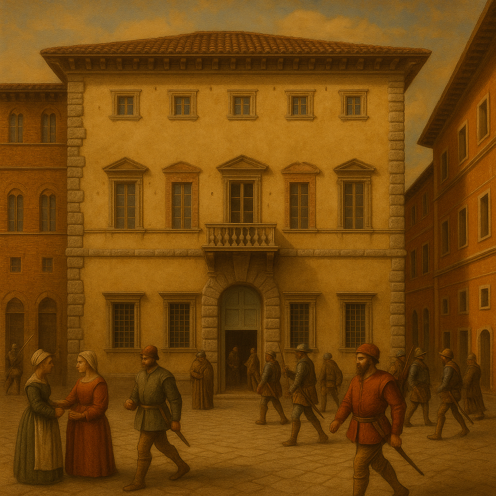

Il Palazzo della Corgna di Città della Pieve
A Renaissance Residence of Power, Art, and Culture
In the heart of Città della Pieve, overlooking the central Piazza Gramsci and directly facing the Cathedral, stands one of the most representative buildings of the Umbrian Renaissance: the Palazzo della Corgna. It is not merely a noble residence, but a tangible symbol of the rise of a family that, in the 16th century, found itself at the crossroads of Italy’s political, military, and religious affairs.
The Origins of the Della Corgna Family
Brothers Ascanio and Fulvio della Corgna, nephews of Pope Julius III (Giovanni Maria Ciocchi del Monte), were the key figures in the family's golden age. Fulvio, a man of the Church, became a cardinal and Bishop of Perugia; Ascanio, on the other hand, was a skilled military leader and was named Marquis of Castiglione del Lago by Emperor Charles V in 1550.
Thanks to papal protection and imperial honors, the two brothers initiated a policy of architectural renewal in their territories. Città della Pieve, their place of origin, was the first center to be equipped with a noble residence worthy of their newfound prestige.
Architectural Design and Construction
Construction of the palace began in 1555 and was completed in 1563. The commission was entrusted to architect Galeazzo Alessi, one of the most important designers of the late Renaissance, also active in Perugia, Genoa, and Rome. The building was constructed using pietra serena, in a sober yet elegant style typical of Mannerist classicism.
The “U”-shaped layout, with an inner courtyard, recalls the plans of Roman suburban villas. The rectangular windows are symmetrically aligned across the façades, while the main entrance is framed by a stone portal of notable simplicity. The overall impression is one of harmony and composure, in keeping with the humanist aesthetic of the time.
The Interior: A Prestigious Cycle of Frescoes

Inside the palace unfolds a rich and complex iconographic program that reflects both the culture of the time and the ambitions of the commissioning family. The frescoes are distributed across two floors:
Ground Floor – Allegories of Good Government
Here lies the renowned Governor’s Hall, frescoed by Niccolò Circignani, known as Il Pomarancio, who was also born in Città della Pieve. The pictorial cycle includes allegories of the Cardinal and Theological Virtues, along with mythological and symbolic scenes. Particularly striking is the scene titled The Muses' Concert, a metaphor for the harmony between wisdom, music, and politics.
First Floor – Classical Mythology
The main floor, or *piano nobile*, was reserved for distinguished guests and receptions. Here, Salvio Savini, a student of Pomarancio, created one of the most intriguing cycles: The Banquet of the Gods, inspired by Ovid’s Metamorphoses. It is a celebration of power through classical deities, in which the della Corgna family saw themselves reflected as a new aristocracy guided by virtue and reason.
The Library and the Museum
The Palazzo today houses important cultural institutions:
- The "Francesco Melosio" Municipal Library, located on the ground floor, holds over 48,000 volumes, including rare manuscripts, incunabula, and a precious illuminated antiphonary from the 15th century.
- The Museum of Natural History and the Territory, located on the upper floor, showcases the environmental evolution of the Città della Pieve area, with collections of fossils, minerals, and a rare xylotheque.
At the entrance, visitors are welcomed by an Etruscan obelisk in fetid stone dating back to the 5th century BC, discovered in the area of Poggio Cavaliere—an enduring symbol of Città della Pieve’s millennia-old historical layers.
Symbolism and Historical Memory
The Palazzo della Corgna is more than a monument—it is a living narrative. Its rooms tell the story of the tension between temporal and spiritual power, between classicism and Christian devotion, between personal glory and the transience of time. Every fresco, every frieze, every ancient book in the library holds a fragment of the great age of the Umbrian Renaissance.
Visit and Information
Address: Piazza Antonio Gramsci, 14 – 06062 Città della Pieve (PG)
Opening Hours: Daily 9:30 AM – 5:30 PM (winter); 9:30 AM – 6:30 PM (summer)
Contacts: cittadellapieve@sistemamuseo.it
Tel. +39 0578 298840
Accessibility: The palace is equipped with elevators and stairlifts